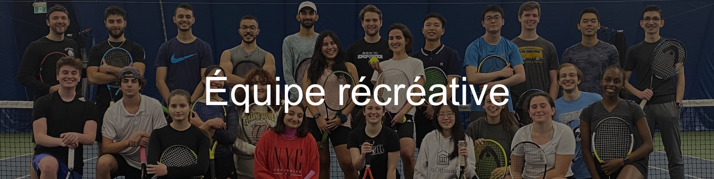

GEE-GEES D'OTTAWA TENNIS

Que vous n’ayez jamais tenu une raquette de tennis ou que vous jouiez depuis plusieurs années, tout le monde est le bienvenu au Club de tennis de l’Université d’Ottawa.
Notre programme récréatif vise à rendre le tennis accessible, amusant et social pour l’ensemble des étudiants et étudiantes de l’Université d’Ottawa. Ce qui rend notre programme unique, c’est qu’il est entièrement dirigé par des étudiants : les entraînements sont organisés et animés par des membres de notre équipe exécutive et des athlètes de l’équipe Varsity des Gee-Gees. Les participants ont ainsi l’occasion d’apprendre directement auprès d’étudiants-athlètes expérimentés tout en faisant partie d’une communauté de tennis dynamique sur le campus.
Nous accueillons des joueurs et joueuses de tous genres et de tous niveaux, des débutants complets jusqu’à environ 4.0 selon le système NTRP. Afin de permettre à chacun et chacune de profiter pleinement des entraînements et de continuer à progresser, les joueurs sont répartis dans l’une de nos trois divisions récréatives en fonction de leur expérience et de leur niveau.
Quel que soit votre niveau, vous aurez l’occasion de développer vos compétences, de rencontrer d’autres étudiants et étudiantes et de profiter du tennis dans un environnement accueillant, inclusif et encourageant.
La Division 1 est notre division récréative la plus compétitive et est souvent considérée comme la réserve de notre équipe Varsity. Elle s’adresse aux joueurs et joueuses avancés qui souhaitent continuer à développer leur jeu tout en se préparant à tenter leur chance pour obtenir une place au sein de l’équipe Varsity des Gee-Gees lors de futures sélections.
La Division 2 s’adresse aux joueurs et joueuses de niveau intermédiaire qui possèdent déjà une certaine expérience du tennis et qui souhaitent améliorer leur régularité, leur technique et leur jeu en match dans un environnement structuré et accueillant.
La Division 3 est idéale pour les débutants ou les joueurs et joueuses qui apprennent encore les bases du tennis. Que vous preniez une raquette pour la première fois ou que vous reveniez au sport après une longue pause, vous apprendrez dans une atmosphère conviviale, encourageante et sans pression.
La saison récréative débute après la semaine de lecture d’automne et se termine avant la période des examens finaux de la session d’hiver. Chaque division s’entraîne une fois par semaine.
Les joueurs et joueuses qui souhaitent participer à notre programme récréatif pendant toute l’année universitaire doivent payer un frais de membership.
Les inscriptions ouvrent généralement en septembre. Pour rester à l’affût des dates d’inscription, des annonces et des nouvelles du club, assurez-vous de nous suivre sur Instagram: @geegeestennis.